系列規則是每個語言一套天空與顏色（日文版白天天色、韓文版 Halo／Universe、英文版夕陽公路），冰島版取了四組冰島風景。每組上面四張截圖依序是：淺色首頁、淺色字卡、深色首頁、深色字卡；下面一排是同一組天空配上四種圖示字的樣子（Þ＝冰島文獨有的字母 thorn、Ferð＝「旅行」、ð＝eth、旅＝跟日文版一樣）。點「開啟可操作版」可以實際滑、點，右上角可切 A–D 與淺／深（有聲音可以聽 Guðrún 與 Gunnar）。
樣本只有 31 張手工字卡，正式內容還在整理。
淺色：冰河薄荷、冰河天藍、霜白／深色：深海軍藍、極光綠、紫（極光夜）
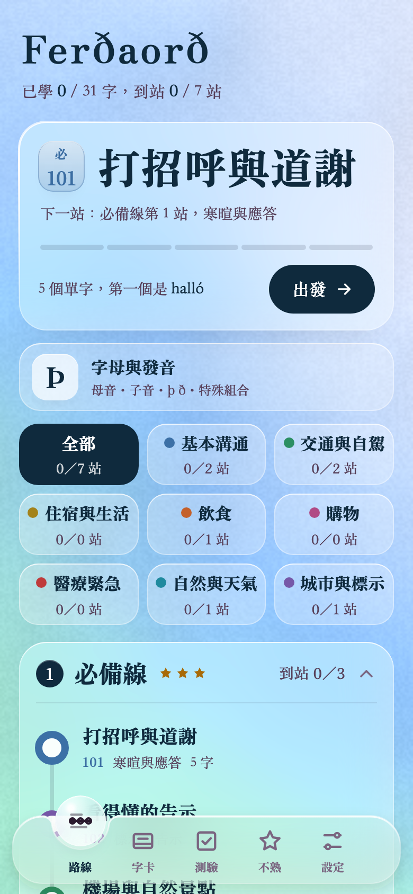
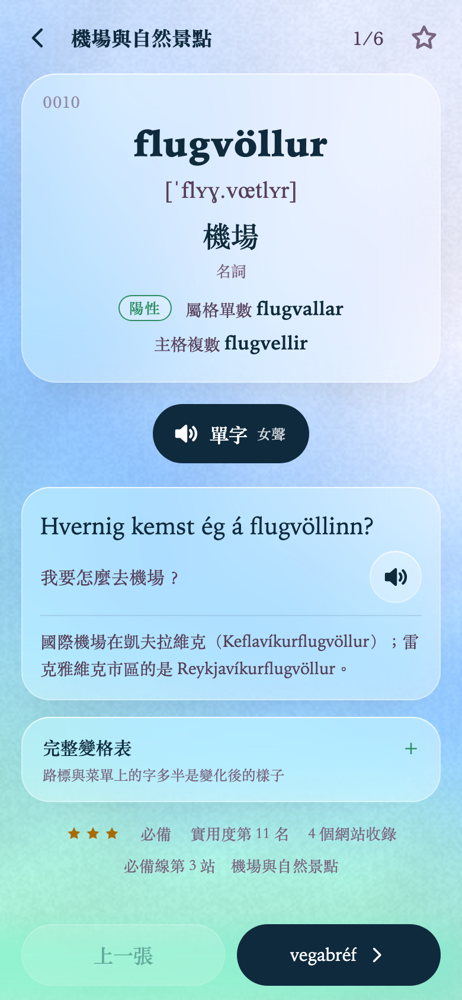
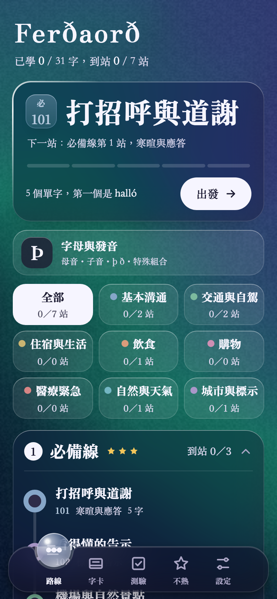
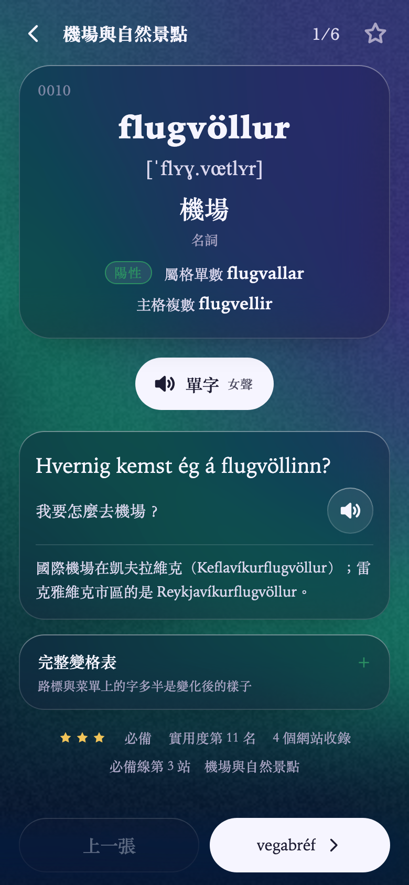
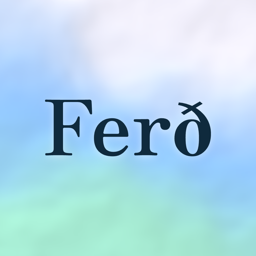
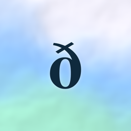
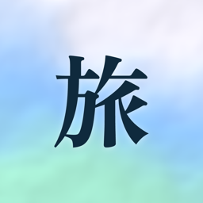
淺色：霧藍、冰川藍、近白／深色：深藍灰、鋼藍、墨黑（冰川夜）
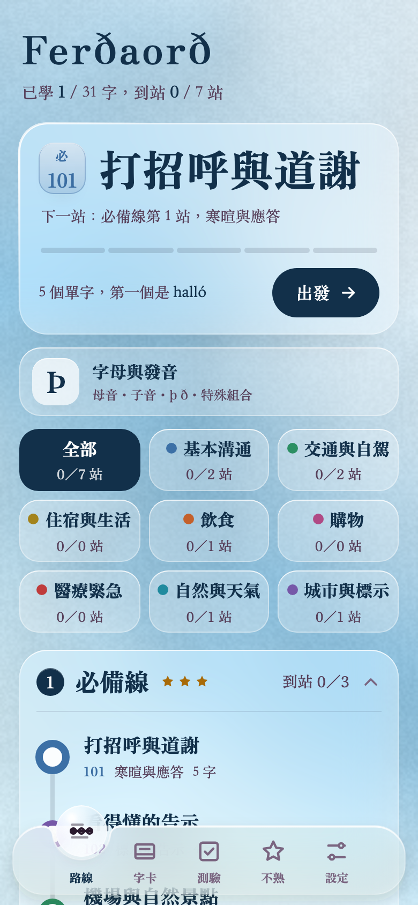
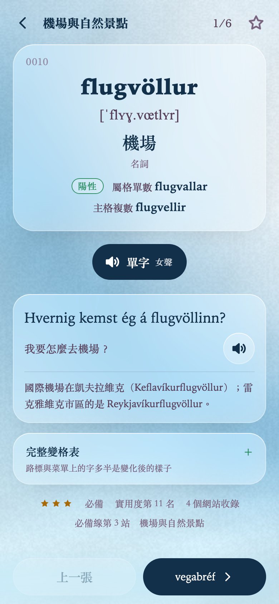
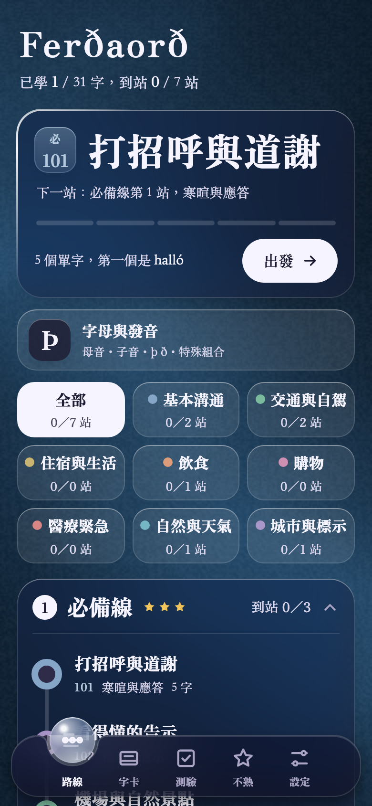
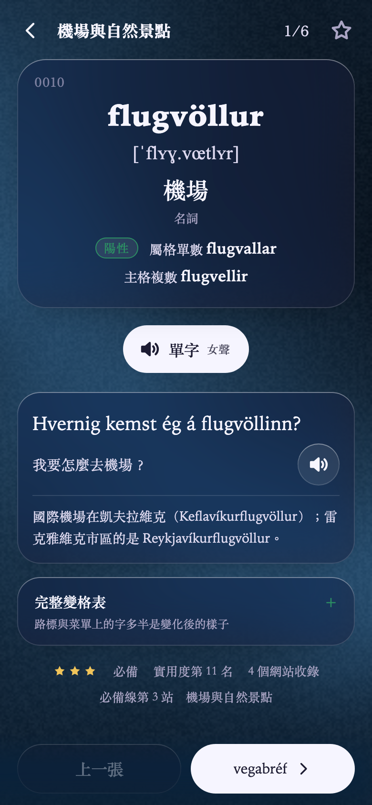
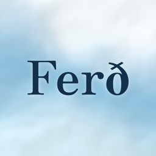
淺色：沙色、熔岩赭、地衣灰綠／深色：玄武岩黑、餘燼紅褐（黑沙灘夜）
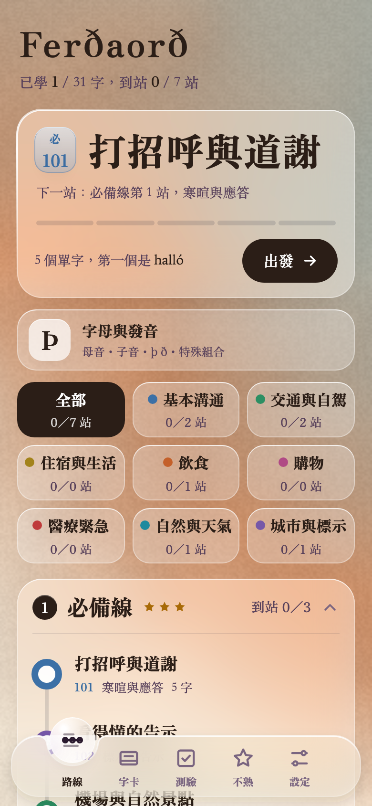
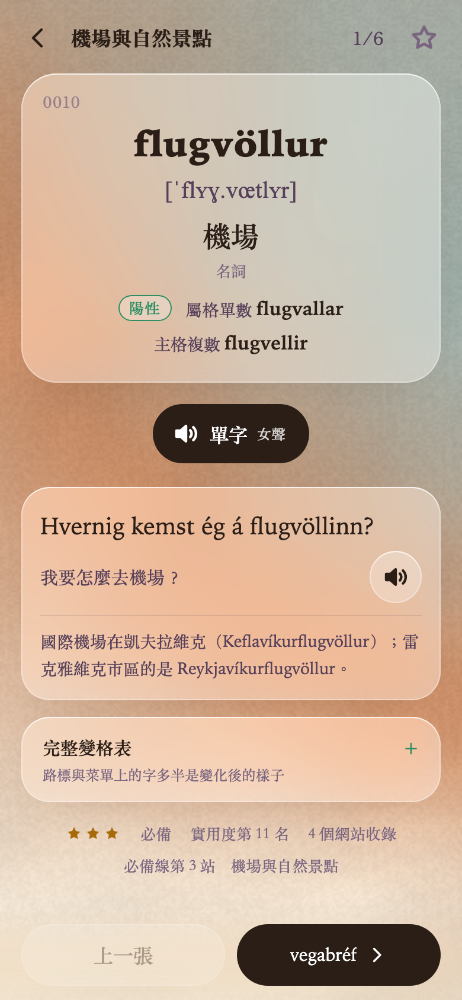
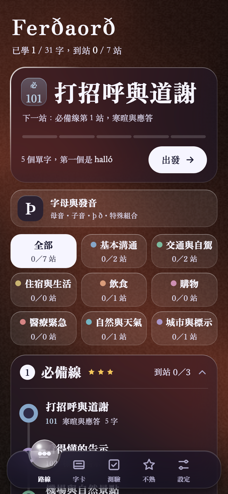
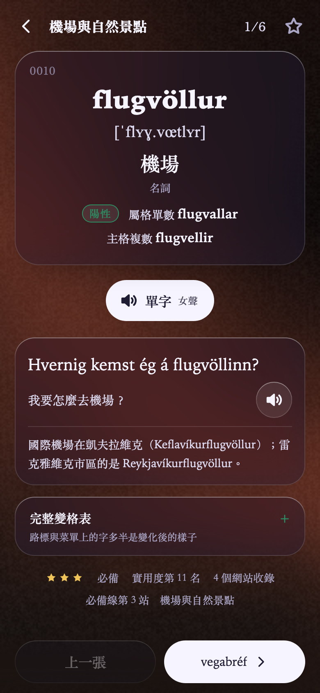
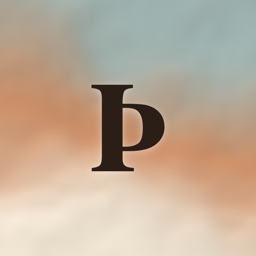
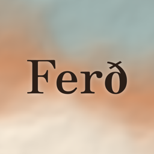
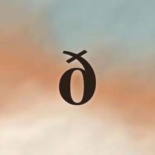
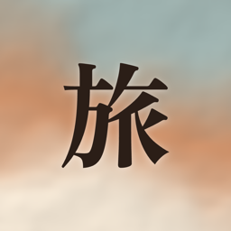
淺色：嫩苔、青苔綠、乾草米／深色：深林綠、苔綠、近黑（高地夜）
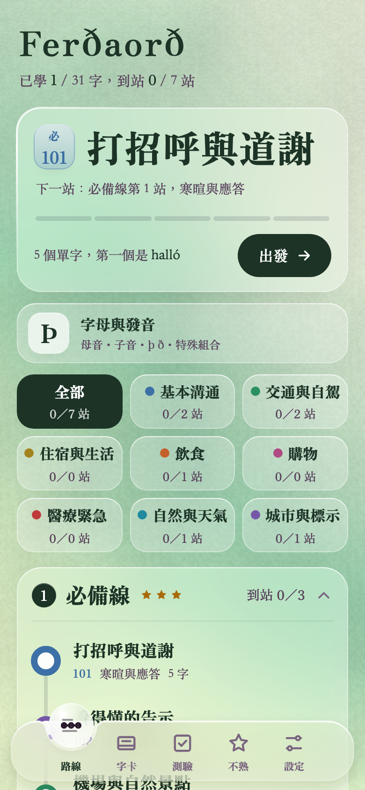
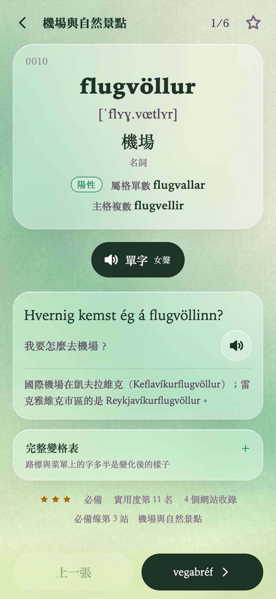
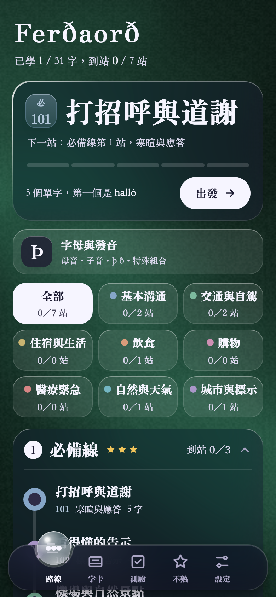
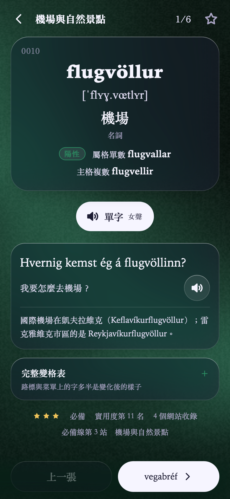
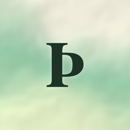
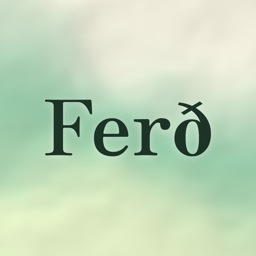
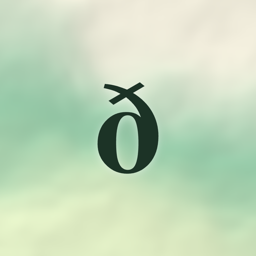
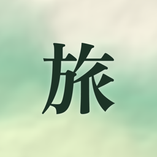